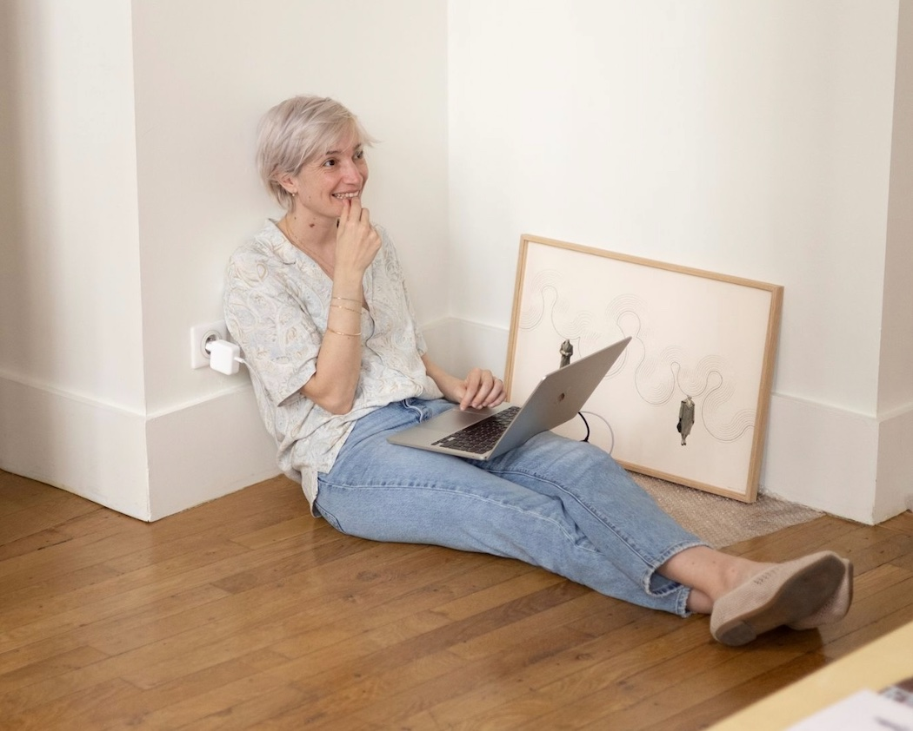

La data embroidery donne un corps aux données par le fil. Capturer ce que l'on ne voit pas et qui pourtant structure nos pensées et nos comportements. Capturer pour comprendre et parfois pour dénoncer des injustices.
Comment vivre ensemble dans un monde pluriel ? Comment cohabiter avec différentes manières de penser, différents rapports aux vivants mais aussi aux morts ? Le travail du studio se construit par séries, car c'est dans l'accumulation que l'inconscient qui encadre nos pensées devient visible.
Mouysset Studio articule deux pratiques. La broderie sur papier pour donner une corporalité à ces données invisibles. Des objets numériques, codés sur mesure, pour les contextualiser et les ouvrir au public. Des ateliers participatifs permettent de mettre ces créations textiles et numériques dans les mains du jeune public.

© Marion SaupinExpositions en cours, événements à venir, archives.
Pourquoi broder des données — statement, biographie, commandes.
Guerrières, Concordances, Amazonas — les séries brodées et photographiques.
Interfaces interactives entre données scientifiques et expérience sensible.